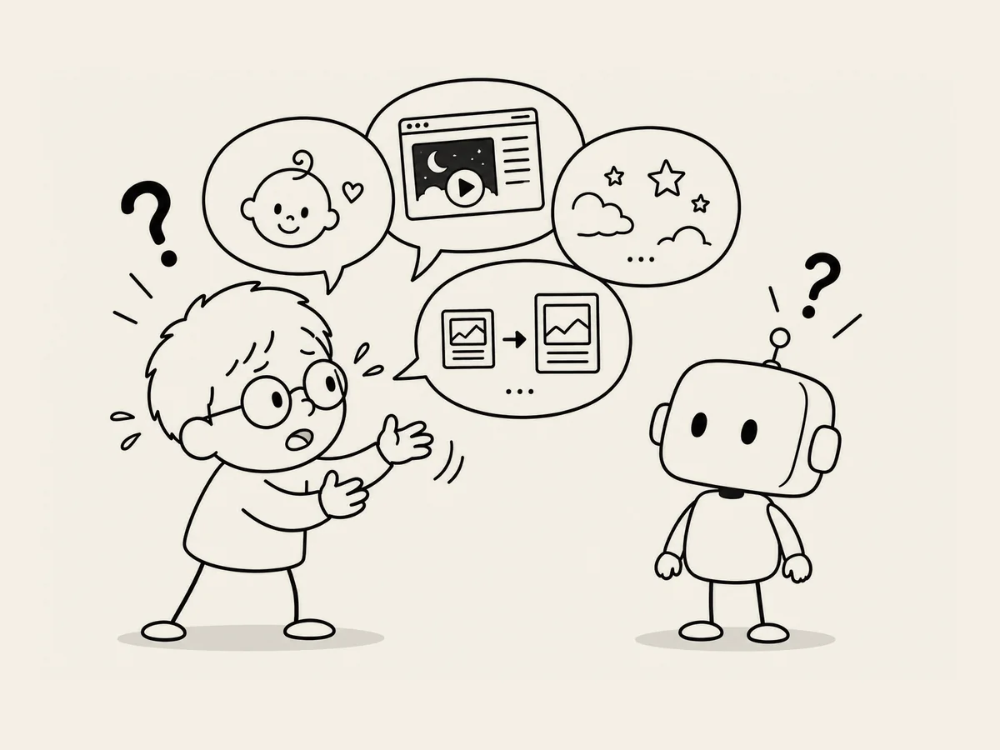

14.
Hang On. Why Am I Explaining Myself to AI?
While working with AI, I noticed a strange habit of mine.
I make the decisions.
I ask AI for its opinion,
take it if I like it,
and if I don't, I go with what I want.
That's all there is to it.
But something strange happens when AI and I disagree.
I could just make the decision and leave it at that,
but without realizing it, I start adding explanations.
"Because this site is for babies..."
"I think this fits the overall mood better."
"I understand what you're saying, but when I actually look at it..."
There I am, explaining myself at length.
Hang on.
Why am I explaining myself to AI?
It's not going to get offended.
It's not going to feel hurt.
Am I worried it might misunderstand me?
Wait.
What exactly is AI going to misunderstand?
